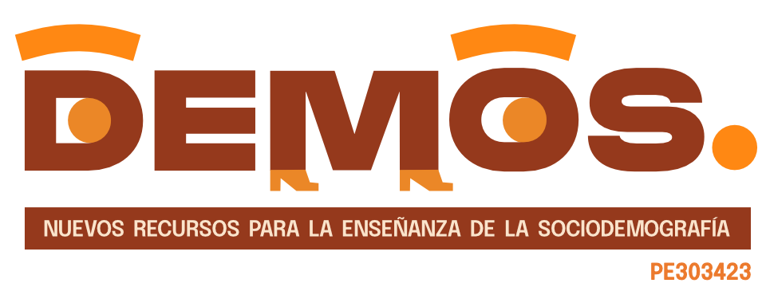

¿Quiénes somos?

Responsable
Ana Ruth Escoto Castillo
Centro de Estudios Teóricos y Multidisciplinarios en Ciencias Sociales, FCPYS Contacto: ana.escoto@politicas.unam.mx Profesora Asociada ‘C’ de Tiempo Completo. Cubículo: Edificio E - 211 - a la par de la DEPRO
Es doctora en Estudios de Población por El Colegio de México, maestra en Población y Desarrollo por FLACSO-México e investigadora nivel I del Sistema Nacional de Investigadores. Estudia el bienestar de la población, en el presente, analizando los procesos de desigualdad y exclusión en los mercados laborales latinoamericanos así como la formación y estructura de los hogares; mientras que en el futuro, a través del estudio de la sustentabilidad. Co-coordinó la Red de Población y Trabajo de la Asociación Latinoamericana de Población (junto con Clara Márquez Scotti) y fui parte del Comité Técnico Académico de la Red Temática de CONACYT “TeTra: Trabajo y Condiciones laborales”. Actualmente es co-editora de la Revista Latinoamericana de Población
Participantes Académicos
Abigail Vanessa Rojas Huerta
Investigadora Asociada “C” de tiempo completo en el Instituto de Geografía, Universidad Nacional Autónoma de México (UNAM) desde 2019. Profesora de asignatura en las Facultades de Ciencias y Filosofía y Letras, UNAM. Doctora en Estudios de Población y Maestra en Demografía por el Colegio de México, actuaria por la Facultad de Ciencias, UNAM.
Sus temas de investigación están relacionados con el envejecimiento poblacional, pensiones, seguridad social, salud y enfermedad; así como temas relacionados con la dinámica y el cambio demográfico. Ha publicado en revistas indexadas, y ha sido revisora de artículos, libros y proyectos de investigación. Además, ha dirigido tesis y ha sido parte de comités tutoriales a nivel licenciatura y posgrado de Facultades o Programas de la UNAM e INSP.
Enrique Mauricio Padrón Innamorato
Investigador Titular de Tiempo Completo en el Instituto de Investigaciones Jurídicas en el Área de Sociología del Derecho. Es miembro del Sistema Nacional de Investigadores del CONACyT y pertenece al Nivel C del Programa de Primas al Desempeño del Personal Académico de Tiempo Completo (PRIDE - UNAM). Actualmente es Responsable Técnico de la Red Temática “Trabajo y condiciones laborales” (teTra) del CONACyT. Es Coordinador académico del Diplomado sobre el Derecho a la No Discriminación que se imparte en el IIJ – UNAM. Es doctor en Estudios de Población por el Colegio de México y Maestro en Población por la Facultad Latinoamericana de Ciencias Sociales (FLACSO México).
Sus principales líneas de investigación versan sobre mercados laborales; condiciones y características del trabajo y los trabajadores; vulnerabilidad social, exclusión social, discriminación, niñas, niños, adolescentes y jóvenes y el enfoque de derechos humanos. Desde hace más de diez años, además, ha trabajado e impartido cursos sobre metodología de la investigación social, tanto desde el enfoque cuantitativo como cualitativo. Pertenece a distintas asociaciones científicas y profesionales, tanto a nivel nacional como internacional.
Abraham Granados Martínez
Investigador Nacional del Sistema Nacional de Investigadores (SNI) Nivel I, de enero de 2021 al 31 de diciembre de 2023. Investigador Asociado “C”, de Tiempo Completo. Investigador del Instituto de Investigaciones Económicas de la Universidad Nacional Autónoma de México desde agosto de 2017. Es Doctor en Economía por la Universidad Nacional Autónoma de México (UNAM); Maestro en Estudios Urbanos por El Colegio de México A.C y Licenciado en Economía por la Universidad Autónoma Metropolitana (UAM).
Actualmente coordina el Programa de Apoyo a Proyectos de Investigación e Innovación Tecnológica (PAPIIT) IA301922 Discriminación y vulnerabilidad en salud en la era post-COVID-19. Políticas públicas de igualdad de género y equidad territorial. Ha impartido materias en el Posgrado de la Facultad de Economía de la UNAM como “La Política Macroeconómica Actual y su Impacto en la Economía no Remunerada de la Reproducción” y “Macroeconomía III”.
Académicos y académicas externas
Nina Castro-Méndez
Doctora en Estudios de Población por El Colegio de México. Maestra en Población por la Facultad Latinoamericana de Ciencias Sociales (sede México) y Actuaria por la Facultad de Ciencias de la UNAM. Se ha desempeñado como docente de demografía, estadística y metodología de la investigación. Actualmente imparte el Seminario de Graduación de la Maestría en Demografía Social del Posgrado en Ciencias Sociales de la UNAM.
Sus intereses de investigación son: el trabajo remunerado y el trabajo de cuidados no remunerado; las trayectorias en el curso de vida y las técnicas cuantitativas y cualitativas para el análisis longitudinal; y la diversidad de desigualdades y vulnerabilidades que enfrentan las mujeres.
Es integrante de la Red teTra "Red temática Trabajo y Condiciones Laborales" en la que ha participado en proyectos sobre: las condiciones de la población trabajadora en México ante la pandemia; la magnitud y características de los procesos laborales; la (re)conceptualización teórico-empírica de la dinámica laboral en México usando técnicas longitudianles.
Ricardo Regules García
Es Senior Program Researcher en el Population Council donde desarrolla, supervisa y coordina proyectos programáticos y de investigación. Destacan entre ellos: Abriendo Futuros: A program for rural indigenous girls in Yucatan, Mexico; VoCes-19; Alianza Nacional por el Derecho a Decidir (andar) y Population, Environmental Risk, and the Climate Crisis; Assessment of young feminist organizing landscape and impact in Kenya and Mexico.
Doctor en Estudios de Población por El Colegio de México. Maestro en Geografía Estudios Urbanos y Ambientales por la Universidad de Concordia - Canadá y Licenciado en Humanidades con Especialidad en Medio Ambiente Humano por la Universidad de Concordia - Canadá.
Victor Manuel García Guerrero
Profesor-Investigador de tiempo completo del Centro de Estudios Demográficos, Urbanos y Ambientales de El Colegio de México. Es Investigador Nacional nivel II por el Sistema Nacional de Investigadores del CONACyT. Editor Asociado de la revista Demographic Research. Es asesor en métodos demográficos para el Fondo de Población de Naciones Unidas, el Consejo Nacional de Población (en donde ha participado en los últimos tres ejercicios de proyecciones oficiales de población), en la Secretaría de Desarrollo Social, el Banco Interamericano de Desarrollo y en distintos despachos de consultoría, bancos y aseguradoras.
Doctor en Estudios de Población por el CEDUA-COLMEX. Sus temas de investigación versan sobre demografía aplicada; estimaciones y proyecciones de población junto con su uso en la política pública y toma de decisiones; así como el análisis demográfico de la mortalidad, fecundidad y migraciones.
Claudia Patricia Masferrer León
Claudia Masferrer es Profesora-Investigadora en el Centro de Estudios Demográficos, Urbanos y Ambientales de El Colegio de México, Coordinadora del Seminario Migración, Desigualdad y Políticas Públicas y miembro del Cuerpo Académico Dinámica Demográfica. Desde 2023 es Editora Asociada del International Migration Review. Es Doctora en Sociología por la Universidad McGill y Maestra en Estadística por la Universidad de Texas en Austin. Sus líneas de investigación se centran en la migración interna e internacional, la integración de inmigrantes y las dinámicas demográficas, la desigualdad, y cómo las políticas públicas median estos procesos. Es autora del Atlas de migración de retorno de Estados Unidos a México, coordinadora del libro La década en que cambió la migración. Enfoque binacional del bienestar de los migrantes mexicanos en Estados Unidos y México, así como de decenas de artículos de investigación, capítulos de libro y reportes de política y coordinadora de otros libros.
Erika María Delfin Macías
Actualmente labora en la Universidad del Claustro de Sor Juana y en la Preparatoria Anáhuac campus Oxford. Cuenta con más de tres años de experiencia de divulgación cultural en televisión y radio, en donde ha ejercido como conductora (Radio y Televisión de Aguascalientes) durante dos años y uno y medio en Sín-Tesis Podcast; donde también es productora, directora y editora.
Es Maestra en Estudios Latinoamericanos por la Pontificia Universidad Javeriana y Licenciada en Letras Hispánicas por la Universidad Autónoma de Aguascalientes. Sus líneas de investigación son las masculinidades en varones homosexuales y otros temas de género.
Jorge Augusto Paz
Doctor en Economía (2007) y Doctor en Demografía (2018). Es Investigador Principal del Consejo Nacional de Investigaciones Científicas y Técnicas (CONICET). También es Investigador Categoría 1 del Ministerio de Educación de la Nación Argentina y Profesor Regular Titular de la Universidad Nacional de Salta. Dirige el Instituto de Estudios Laborales y del Desarrollo Económico (IELDE) y la Maestría en Economía del Desarrollo (MED) de la Universidad Nacional de Salta. Miembro del Consejo Asesor para el proyecto de Pobreza Crónica (CIPPEC) e investigador asociado del Centro de Estudios sobre Desarrollo Humano (CEDH) Universidad de San Andrés. Investigador del Proyecto Internacional National Transfer Accounts (NTA) del Center for the Economics and Demography of Aging, University of California at Berkeley.
Victoria Prieto Rosas
Es Licenciada en Sociología por la Universidad de la República, Doctora en Demografía por la Universidad Autónoma de Barcelona, y docente del Programa de Población (PP) en régimen de dedicación total. Responsable del proyecto Using internet-based data to quantify and sample international migrants. Applications to examine recent immigration to Uruguay (Programa ANII-Sociedad Max Planck, 2019-2023), y coordinadora del Observatorio de Movilidad, Infancia y Familia (Convenio PP-UNICEF Uruguay, 2020-2023). Integra el equipo coordinador del Latin American Migration Project en la realización de etnoencuestas de inmigración en Chile, Colombia y Costa Rica (2021-2022), y es miembro fundador del grupo científico de Análisis Comparado sobre Migración y Desplazamiento Internacional en las Américas CAMINAR.
Sus intereses de investigación se centran en las dinámicas de inclusión-exclusión social de la población inmigrada en Uruguay y la región, combinando la producción de información primaria y la armonización de registros administrativos, encuestas específicas de migración, y datos derivados del uso de redes sociales web, analizando los límites y oportunidades para el estudio de las dinámicas de movilidad humana.
Mario Martínez Salgado
Investigador Asociado “C” de Tiempo Completo con adscripción en la Unidad de Investigación sobre Representaciones Culturales y Sociales de la Coordinación de Humanidades (UDIR), UNAM Campus Morelia.
Maestro en Demografía y Doctor en Estudios de Población por El Colegio de México. En la UDIR-UNAM coordina el Seminario Identidad Cultura y Sociedad, y es co-coordinador del proyecto Escuela de Métodos para la Actualización Docente en la UNAM Campus Morelia.
Sus líneas de investigación son familia y curso de vida, uso del tiempo y trabajo no remunerado y los métodos de investigación social cuantitativos. Tiene experiencia didáctica dictando cursos de dinámica poblacional y metodología cuantitativa.
Irene Casique
Es investigadora titular en el Centro Regional de Investigaciones Multidisciplinarias de la Universidad Nacional Autónoma de México desde 1999 e integrante del Sistema Nacional de Investigadores desde 2001. Cursó la licenciatura en Sociología en la Universidad Católica Andrés Bello, en Caracas, la maestría en Demografía en el Colegio de México y obtuvo su doctorado en Sociología en la Universidad de Texas en Austin.
Realiza investigaciones sobre temas de género, empoderamiento de las mujeres, dinámica familiar, salud reproductiva y violencia de género. Su principal línea de investigación es el empoderamiento de la mujer mexicana y la relación de este proceso con el bienestar de la mujer y la familia.
Sus libros más recientes son Apuesta por el Empoderamiento adolescente (2018) y Nuevas rutas y evidencias en el estudio de la violencia y la sexualidad de adolescentes (Coord., 2019).
Participantes Estudiantes
Tián Ramos Betancourt
Estudiante de la Licenciatura en Sociología en la UNAM y del Programa de Especialización en Psicología de la Universidad de Palermo.
Ha participado como becarie en los proyectos PAPIME: “Las barreras para estudiantes con discapacidad en el aula” a cargo de la Dra. Patricia Brogna; “Recursos didácticos para la enseñanza-aprendizaje presencial y no-presencial de la asignatura Teoría del Intercambio y Acción Racional en sociología” del Dr. Christian Ascencio; y “DEMOS: Recursos didácticos para la enseñanza de la sociodemografía” de la Dra. Ana Escoto.
También ha sido ayudante de profesor en las materias: Sociodemografía, Psicología Social, Teoría del Intercambio y Acción Racional y Teoría Crítica; en la Facultad de Ciencias Políticas y Sociales. Interesade en la interdisciplina: neurosociología, emociones, cuerpo e identidad.
Ana Paola Linares García
Estudiante de Licenciatura en sociología. Becaria del proyecto PAPIME:DEMOS: Recursos didácticos para la enseñanza de la sociodemografía y ayudante de profesor en la materia Metodología I.
Ha participado como becaria en el proyecto PAPIIT “Las respuestas del mercado de trabajo mexicano ante la pandemia. Una visión desde las condiciones de la población trabajadora” a cargo de la Dra Ana Escoto. Y como ayudante de profesor en la materia de Metodología II.
Le interesa compartir el conocimiento.
Zyanya Itzel Puga Sánchez
Estudiante de licenciatura en sociología, ha participado en el curso “Inferencia e introducción a los modelos estadísticos en R” impartido por la Dra. Ana Ruth Escoto, fue voluntaria en la jornada universitaria de orientación vocacional 2023, ayudante de profesor en la materia de análisis cuantitativo de la carrera de ciencias políticas y en estadística aplicada a las ciencias sociales lll.
Intereses en la sociología urbana y rural, la sociodemografía y la aplicación de la estadística en ciencias sociales.
Miguel Ángel Cruz Ramírez
Estudiante de la Licenciatura en Sociología en la Facultad de Ciencias Políticas y Sociales y participe en el proyecto PAPIME “DEMOS: Recursos didácticos para la enseñanza de la sociodemografía” de la Dra. Ana Escoto. También ha sido ayudante de profesor en las materias: Sociología Comprensiva, Sociología Funcionalista y Sociología del Género.
Interesado en temas de género, infancias, y violencias, específicamente la violencia cultural.
Aldo Fabrizio Granados Avilés
Estudiante de la Licenciatura en Sociología, participó en el proyecto PAPIME “DEMOS: Recursos didácticos para la enseñanza de la sociodemografía” de la Dra. Ana Ruth Escoto Castillo. Además ha sido ayudante de profesor con la Dra. Teresa Azucena Rodríguez de la Vega en Sociología Clásica Positivista.
Le interesa la investigación, y compartir el conocimiento.
Oscar Uriel Valdés Bautista
Actualmente estudia el último año de la Licenciatura en Sociología en la Facultad de Ciencias Políticas y Sociales; y participa en el el proyecto PAPIME “DEMOS: Recursos didácticos para la enseñanza de la sociodemografía” de la Dra. Ana Ruth Escoto Castillo.
Ha sido profesor adjunto en la materia de Introducción a la Investigación en Ciencias Sociales, Sociología Clásica: El proyecto científico del positivismo y Metodología II. Además de que ha trabajado como reportero y fotógrafo para el períodico ContraRéplica; y los medios digitales Capital CDMX y La Hoguera.
Abril Saad Villegas
Egresada de la Licenciatura en Sociología en la UNAM y tesista, estudiante independiente de artes visuales. Las líneas de investigación que más le interesan son los estudios de género, epistemologías feministas y la sociología del arte. Ha participado como expositora en el círculo de lectura “Sociología y Anarcofemínismo: Una historia de Amor Libre”; y como estudiante en la VI Edición de los cursos de verano sobre migraciones y movilidades del Seminario Universitario de Estudios sobre Desplazamiento, Interno, Migración, Exilio y Repatriación SUDIMER, en el curso “Temas de coyuntura. Movilidades, desigualdades y desplazamientos forzados”.
Ariadna Lozada Ávila
Artivista y estudiante de la Licenciatura en Sociología por parte de la Facultad de Ciencias Políticas y Sociales de la UNAM.
Líneas de investigación: futuridades, cuerpos y corporalidades.
Actualmente participante del programa académico en Estudios Interdisciplinarios del Centro Nacional de las Artes (CENART) y Campus Expandido del Museo Universitario Arte Contemporáneo.
Canek T. Cancino Lopez
Estudiante de Sociología en la UNAM. Ha sido ayudante de profesor en la materia de Estadística II y voluntario de los congresos ALAS 2022 y CLACSO 2022.
Asistió al curso “Inferencia e introducción a los modelos estadísticos en R” impartido por la Dra. Ana Ruth Escoto Castillo y al curso “Orientalismo: la representación de las culturas asiáticas en Europa y Latinoamérica” coordinado por el Dr. Oscar Figueroa.
Sus temas de interés son la sociodemografía, el trabajo, la teología y el orientalismo (en especial la indología).